四月十七日 (日)
很早就醒，這間 hostel 外面常有人談話有點吵，對我來說最大問題是早餐時間，是九點才開始…這 hostel 的住客和職員原來昨晚去了喝酒有些像未知醒般。有時我會覺得自己不懂吸煙和飲酒失去了很多結交的機會。是不是應該人家請我食煙係咁易都吸兩啖俾下面。
早餐是這裏的人早上普遍會吃的東西，一定會有的是大量的麵包，不同的麵包醬，鮮蕃茄青瓜，芝士以及不同的橄欖。雖然很簡單，但我越吃越喜歡，尤其是芝士，而一向都不喜歡吃的橄欖，竟然變成喜歡。
行去 Topkapı Palace 途中，看見一間叫 Bahaus Guesthouse，入去問問價錢，個 reception 反應呆滯，他說因當夜更沒睡，我見他們的早餐時間是 7:30，問他可否訂 7/5 的房，他說不如我上網訂，我問我不能在這裏直接訂的嗎？真奇怪，我現在付錢不是更直接，但他好像好難為似的，結果說可以記下我，然後見他在一本簿的 7/5 日寫下我名字，一間房，我問他要多少錢，他說 20 EUR，到時才收錢，心想真好。
Topkapı Palace 好大，淨係啲城門都又高又大又靚。個廚房好似剛開放，裏面弄得變了個展覽館，展示很多器皿，地上滿是小石，上面舖了木地，在上面行的時候聽到小石的聲音，守衛全程看著你，不准拍照。
想參觀埋 Harem 要額外收 25 TL，Palace 本身已經收 40 TL，Museum Pass 就全包，所以真的很化算。Harem 好大，資料話有成 400 間房，安排單程路線給遊客，裏面有些房的裝飾真的好精緻，行完會直接到達 Palace 的北面，那裏有很多花，人們都聚在那裏影相，離開人羣行去中庭，不過更多人，因為那裏有間展示珍寶的房，人們排隊在房內繞圏看，基本上都是看那把好靚有翡翠嘅 Topkapı Dagger 同一粒鑽石。
行完皇宮行去 Süleymaniye Mosque，由 Gülhane 站打橫行過去，竟然這條路線是差不多鬼影都冇隻，兩邊的店都關門，明明仍然是屬於旅遊區。不過很清靜舒服，還不會被陽光直曬。
其實行去 Süleymaniye Mosque 一心只是想吃附近的食店的豆飯，竟然沒有打算過去參觀這清真寺，可能因為實在看過太多，有點厭倦。不過去到一見到，又被它吸引著。基本上寺旁的一排食店都是有得吃豆，好多間都是什麽 Ali Baba 的，所以我都不知我吃的是不是想吃的那一間，不過是但，好好味，只是沒想過是辣的，有點擔心，因為今晚要座夜巴士，N 年前在印度座夜車肚子不舒服的陰影仍在。
不想再看清真寺，其中一個原因是覺麻煩和髒。不過這裏的清真寺，很乾淨，你沒有合適衣著準備，這裏有得借給你。而且 Süleymaniye Mosque 好靚，所以還是入去看了。
回 Sultanahmet 看 Islamic Art Museum 和 Mosaic Museum，然後就搭車去 Octogar (巴士站)，Tram 和 Metro 多人到爆，還要好熱。六點就到了 Octogar，一出閘就有一羣人問我去邊然後帶我去買巴士票。去 Selçuk 的車開八點，在一間食店打發時間，但又不敢亂吃東西，結果只飲了茶和湯。
說是八點，但往往都不準時，好像八點半才開出，土耳其的長途巴士有服務員，像飛機一樣有小吃和飲品，其實都幾好，前面椅背有 screen 可以睇戲，不過我只想關了它睡覺，不懂關，幸好它不知何故地沒了畫面，而其他位沒人用的 screen 卻仍然開著，奇怪。
去到十點幾十一點，都未關燈，覺得奇，然後巴士停了，前面是好多的車，原來要排隊等上船，之後看地圖，也不太明白為什麼要用船過海不用橋的呢？船程不算長，但都下車去逛逛，風大，凍到癲，躲入船的餐廳，好多人買熱飲熱食。我就找個位坐，坐了不知多久，發覺怎麼餐廳像要關門似的，乘客也沒多少了，原來到了，回到巴士上，好像我是最後一個上車。
上岸後終於關燈了，差不多十二時，終於有得睡，不過，這裏的巴士，總是停好多次一些城市的 octogar 去上落客，好處是都不用擔心沒得去廁所，但我就睡不了多了。
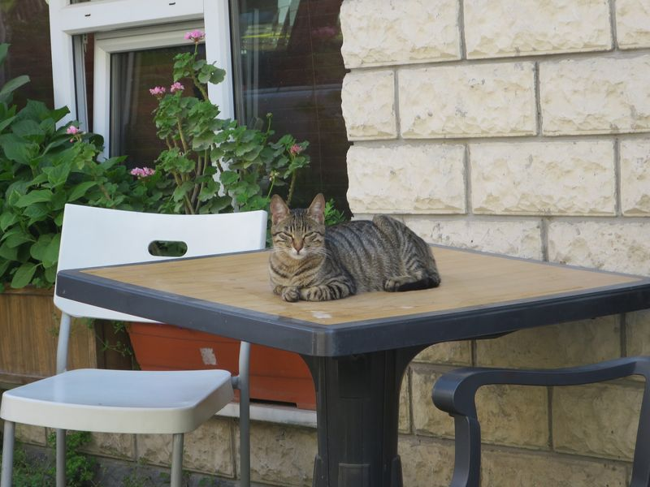
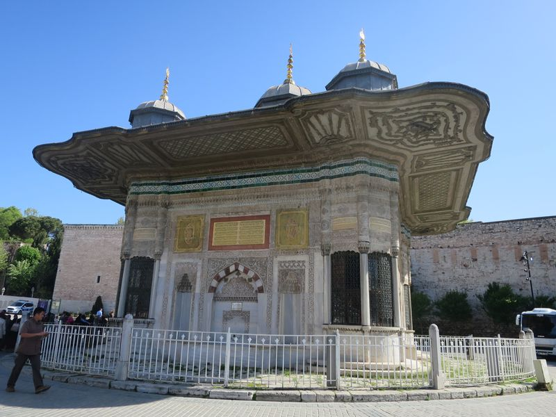
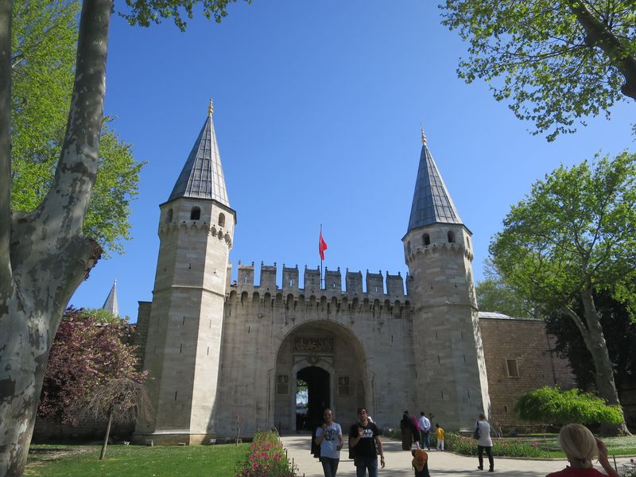
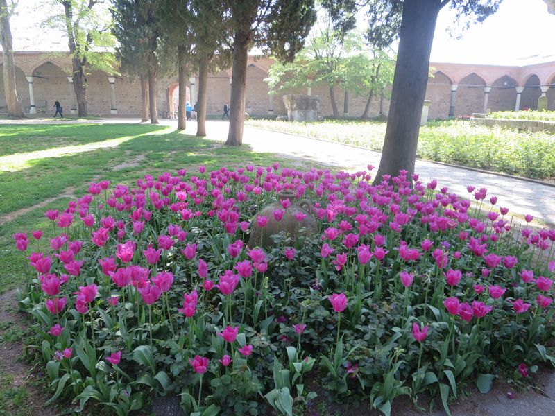
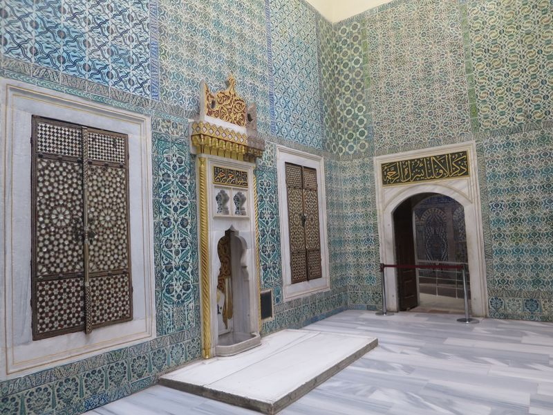
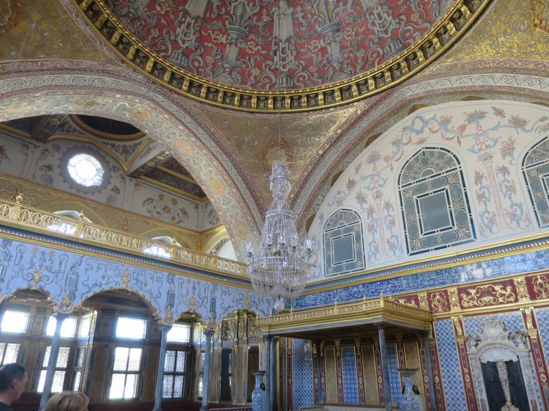
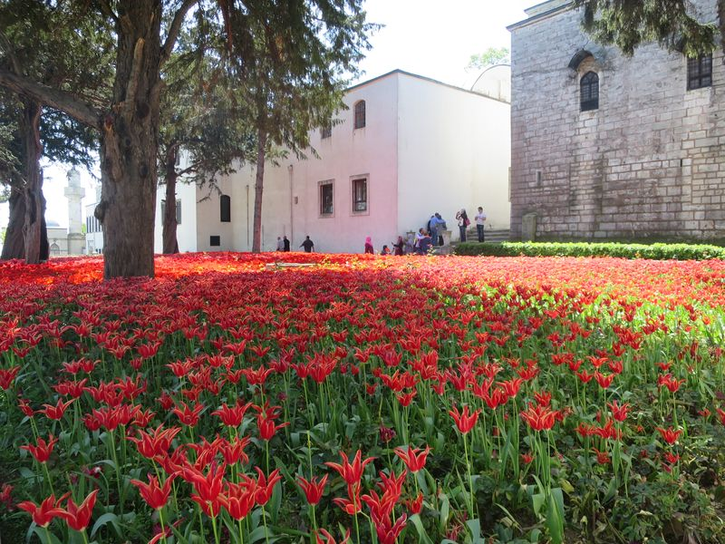
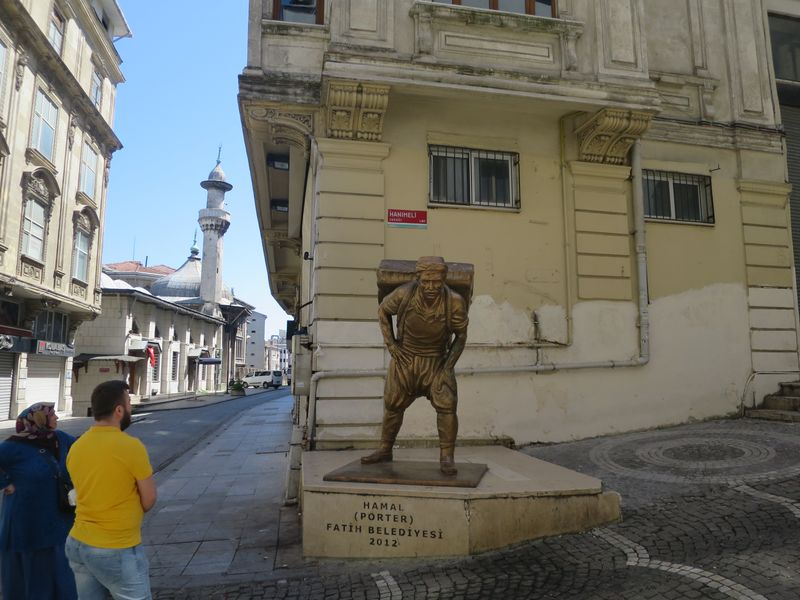
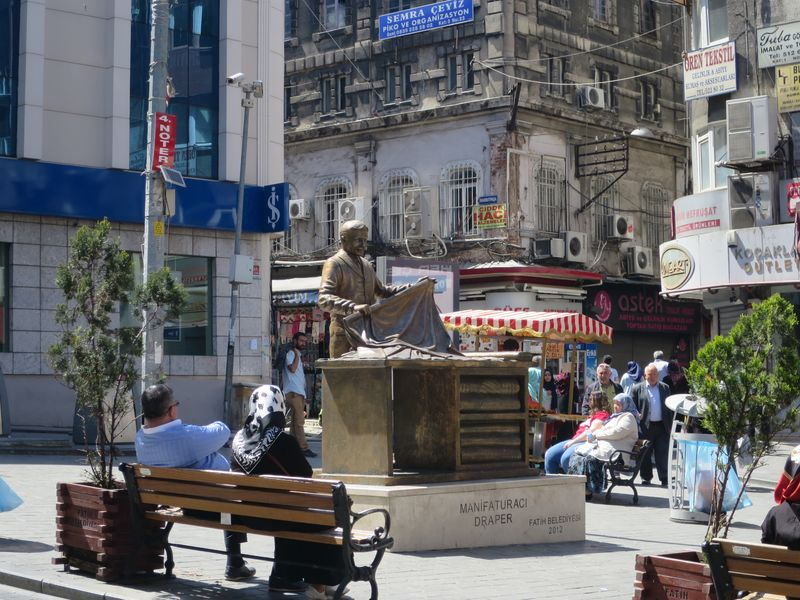
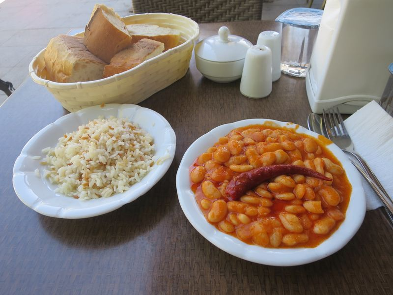
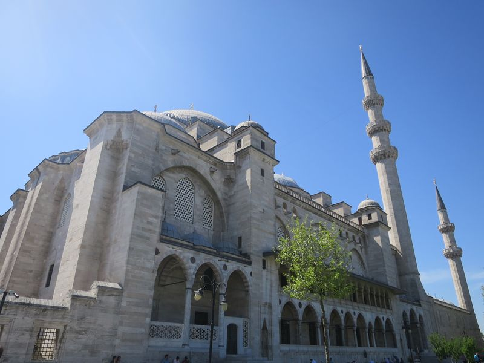
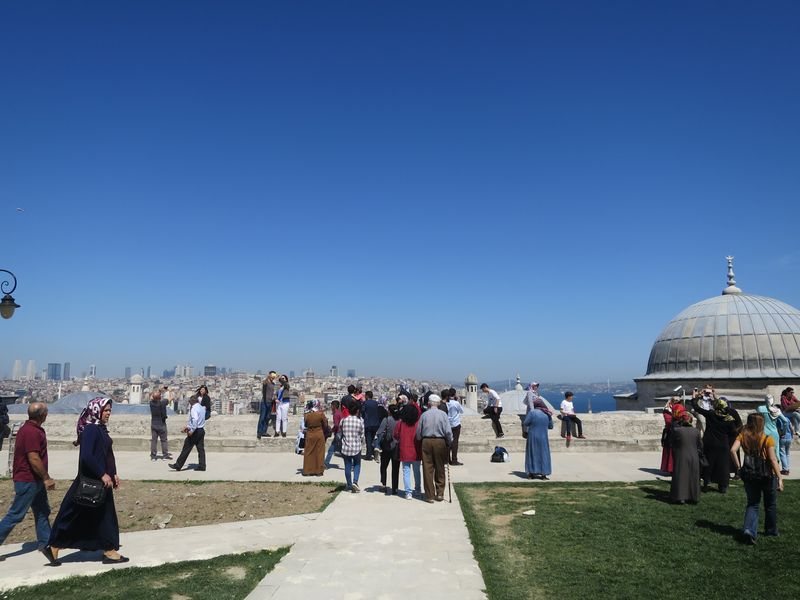
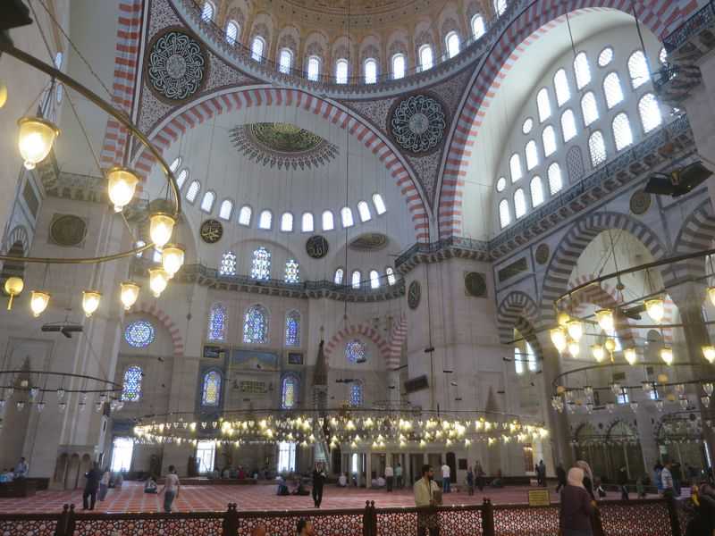
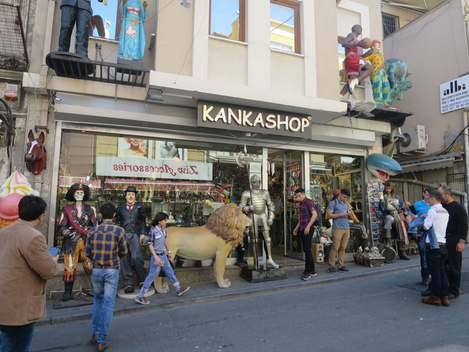
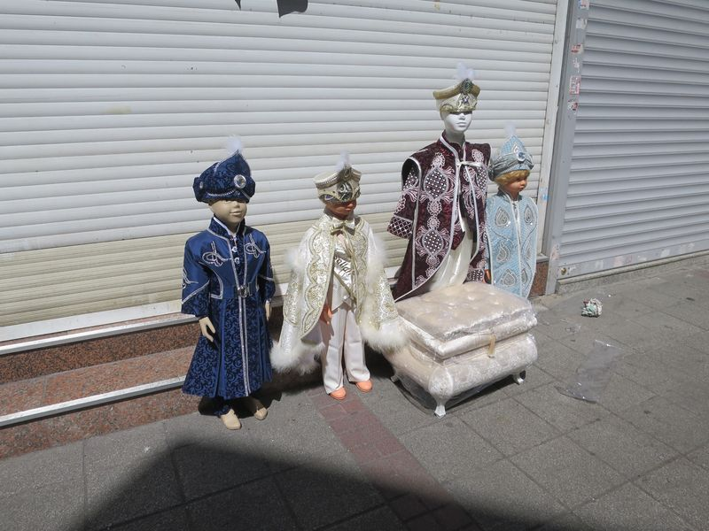
2016 Turkey
❮ Previous
Next ❯